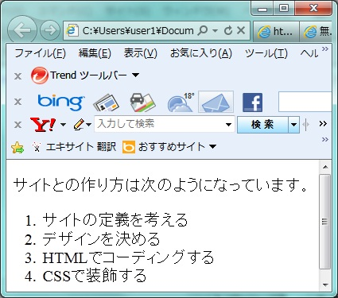
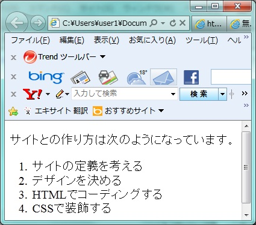
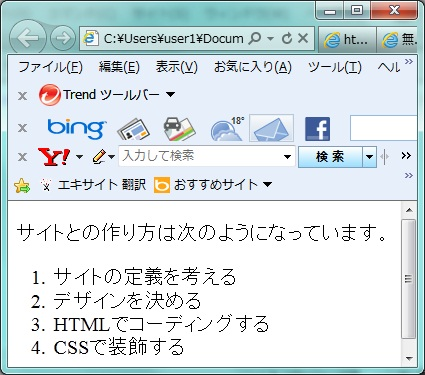
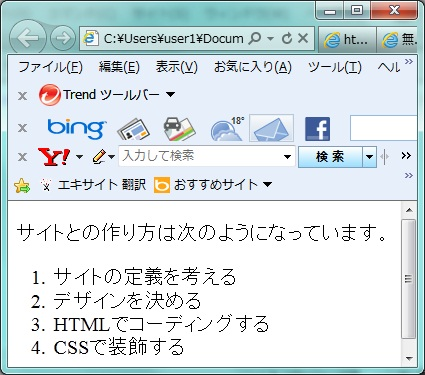
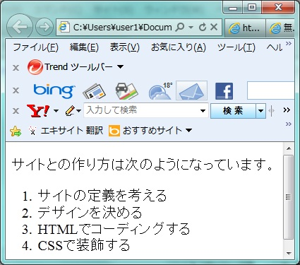

番号付きのリストを作りたい
<ol><li>～</li></ol>
要素区分 ol : ブロックレベル、li:-
<ol>～</ol>タグで、番号つきのリストであることを示し、順番が重要なリストを作成した場合に使用します。 一般的なブラウザでは各項目の先頭に連番の数字が付き、リスト全体がインデントして表示されます。
HTML Source
<p>サイトとの作り方は次のようになっています。</p> <ol> <li>サイトの定義を考える</li> <li>デザインを決める</li> <li>HTMLでコーディングする</li> <li>CSSで装飾する</li> </ol>

 


